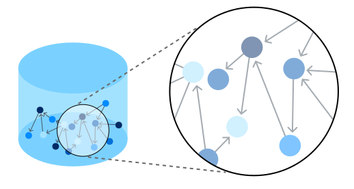

CIUDADES INTELIGENTES
Las ciudades inteligentes (o smart cities) son un concepto emergente en la planificación urbana que aprovecha la tecnología y los datos para mejorar la calidad de vida de sus habitantes, optimizar el uso de los recursos y promover la sostenibilidad. En una ciudad inteligente, las infraestructuras urbanas, los servicios públicos y la gestión del entorno están interconectados mediante tecnologías avanzadas como el Internet de las Cosas (IoT), la inteligencia artificial (IA), el big data y la conectividad 5G.
BASE DE DATOS DISTRIBUIDA
En ciudades inteligentes, los datos se generan continuamente desde múltiples fuentes, como sensores IoT, cámaras, aplicaciones móviles y servicios públicos. Las bases de datos distribuidas son esenciales para manejar grandes volúmenes de datos en tiempo real y garantizar la disponibilidad en distintas ubicaciones.
Ejemplo: Bases como Cassandra y CockroachDB son utilizadas para gestionar datos de tráfico, energía y transporte.
BASE DE DATOS EN LA NUBE

La migración a soluciones basadas en la nube permite un almacenamiento escalable, redundancia, y análisis en tiempo real.
Ejemplo: Servicios como Google BigQuery, AWS DynamoDB, y Azure Cosmos DB se usan para análisis urbanos y gestión de recursos.
BASE DE DATOS DE SERIES TEMPORALES
Estas bases son ideales para almacenar datos generados a intervalos regulares, como lecturas de sensores IoT en redes de agua, electricidad o tráfico.
Ejemplo: InfluxDB y TimescaleDB para monitoreo en tiempo real.
BASE DE DATOS DE GRAPH (DE GRAFOS)

En una ciudad inteligente, los datos están interconectados: transporte público, infraestructuras, servicios de emergencia y más. Las bases de grafos permiten modelar y analizar relaciones complejas entre estos datos.
Ejemplo: Neo4j se usa para optimizar rutas de transporte o analizar redes de suministro energético.
BASE DE DATOS MULTIMODELO
Estas bases soportan múltiples tipos de datos (documentos, grafos, relacionales, etc.) en un solo sistema. Son ideales para manejar la diversidad de datos de una ciudad inteligente.
Ejemplo: ArangoDB y OrientDB.
AUTOMATIZACION Y PROCESAMIENTO EN TIEMPO REAL

Las bases de datos modernas integran capacidades de procesamiento en tiempo real para analizar flujos de datos y tomar decisiones automatizadas.
Ejemplo: Gestión de semáforos inteligentes según el flujo vehicular o predicción de demandas de energía.
Conclusión Final
Las ciudades inteligentes representan una evolución significativa en la forma en que entendemos y gestionamos los entornos urbanos. A través de la integración de tecnologías avanzadas como el Internet de las Cosas, la inteligencia artificial y el big data, las ciudades inteligentes buscan resolver problemas urbanos complejos, mejorar la calidad de vida de los ciudadanos y promover un desarrollo sostenible. La capacidad de estas ciudades para gestionar de manera eficiente los recursos, optimizar los servicios públicos y facilitar la participación ciudadana abre nuevas posibilidades para crear entornos urbanos más habitables y sostenibles.
Sin embargo, el camino hacia la implementación exitosa de ciudades inteligentes requiere no solo de avances tecnológicos, sino también de un enfoque inclusivo que considere la equidad, la privacidad y la seguridad de los ciudadanos. Si bien las oportunidades que ofrecen son vastas, también es esencial abordar los desafíos sociales, económicos y éticos que pueden surgir a medida que las tecnologías continúan transformando nuestras ciudades.
En definitiva, las ciudades inteligentes no son solo un objetivo tecnológico, sino un paso hacia una urbanización más inteligente y humana, donde la innovación se pone al servicio de las personas para construir un futuro urbano más eficiente, resiliente y sostenible.